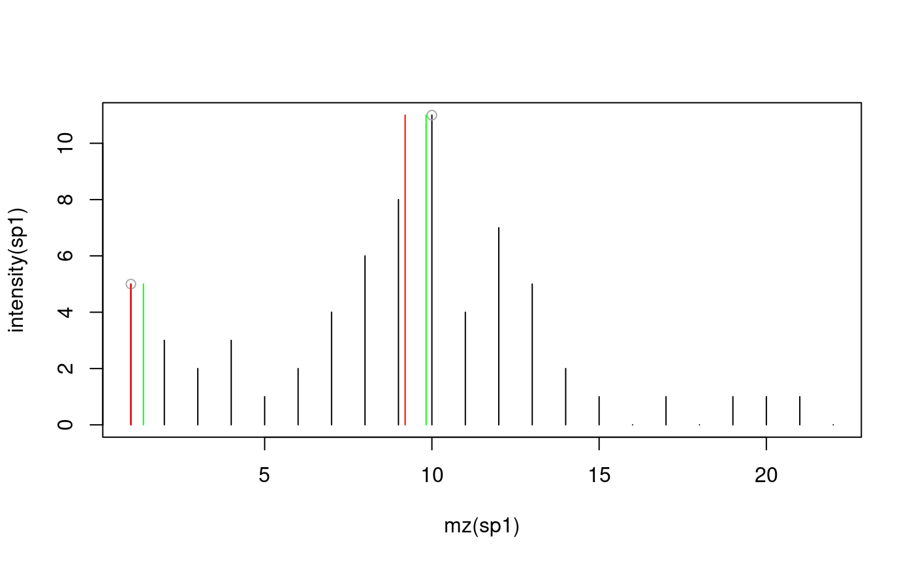

pickPeaks-method.RdThis method performs a peak picking on individual spectra
(Spectrum instances) or whole experiments (MSnExp instances) to
create centroided spectra.
For noisy spectra there are currently two different noise estimators
available, the Median Absolute Deviation (method = "MAD") and
Friedman's Super Smoother (method = "SuperSmoother"),
as implemented in the MALDIquant::detectPeaks and
MALDIquant::estimateNoise functions respectively.
The method supports also to optionally refine the m/z value of the identified centroids by considering data points that belong (most likely) to the same mass peak. The m/z value is calculated as an intensity weighted average of the m/z values within the peak region. How the peak region is defined depends on the method chosen:
refineMz = "kNeighbors": m/z values (and their respective
intensities) of the2 * k closest signals to the centroid are
used in the intensity weighted average calculation. The number of
neighboring signals can be defined with the argument k.
refineMz = "descendPeak": the peak region is defined by
descending from the identified centroid/peak on both sides until the
measured signal increases again. Within this defined region all
measurements with an intensity of at least signalPercentage of
the centroid's intensity are used to calculate the refined m/z. By
default the descend is stopped when the first signal that is equal or
larger than the last observed one is encountered. Setting
stopAtTwo = TRUE, two consecutively increasing signals are
required.
By default (refineMz = "none", simply the m/z of the largest
signal (the identified centroid) is reported. See below for examples.
signature(x = "MSnExp", halfWindowSize = "integer",
method = "character", SNR = "numeric", verbose = "logical",
refineMz = "character", ...)Performs the peak picking for all spectra in an MSnExp instance.
method could be "MAD" or "SuperSmoother".
halfWindowSize controls the window size of the peak picking
algorithm. The resulting window size is 2 * halfWindowSize + 1.
The size should be nearly (or slightly larger) the FWHM
(full width at half maximum).
A local maximum is considered as peak if its intensity is SNR
times larger than the estimated noise.
refineMz allows to choose a method for an optional centroid
m/z refinement (see description for more details). Choises are
"none" (default, no m/z refinement), "kNeighbors"
and "descendPeak".
The arguments … are passed to the noise estimator or
m/z refinement functions.
For the noise estimator functions, currenlty only the
method = "SuperSmoother" accepts additional arguments,
e.g. span. Please see supsmu for
details. refineMethod = "kNeighbors" supports additional
argument k and refineMethod = "descendPeak"
arguments signalPercentage and stopAtTwo. See
description above for more details.
This method displays a progress bar if verbose = TRUE.
Returns an MSnExp instance with centroided spectra.
signature(x = "Spectrum", method = "character",
halfWindowSize = "integer", ...)Performs the peak picking for the spectrum (Spectrum instance).
This method is the same as above but returns a centroided Spectrum
instead of an MSnExp object. It has no verbose argument.
Please read the details for the above MSnExp method.
clean, removePeaks smooth,
estimateNoise and trimMz for other spectra
processing methods.
S. Gibb and K. Strimmer. 2012. MALDIquant: a versatile R package for the analysis of mass spectrometry data. Bioinformatics 28: 2270-2271. http://strimmerlab.org/software/maldiquant/
sp1 <- new("Spectrum1", intensity = c(1:6, 5:1), mz = 1:11, centroided = FALSE) sp2 <- pickPeaks(sp1) intensity(sp2)#> [1] 6#> - - - Processing information - - - #> Data loaded: Wed May 11 18:54:39 2011 #> Updated from version 0.3.0 to 0.3.1 [Fri Jul 8 20:23:25 2016] #> peak picking: MAD noise estimation and none centroid m/z refinement [Thu May 17 15:34:37 2018] #> peak picking: SuperSmoother noise estimation and kNeighbors centroid m/z refinement [Thu May 17 15:34:37 2018] #> peak picking: MAD noise estimation and kNeighbours centroid m/z refinement [Thu May 17 15:34:37 2018] #> peak picking: SuperSmoother noise estimation and descendPeak centroid m/z refinement [Thu May 17 15:34:37 2018] #> Spectra centroided: Thu May 17 15:34:37 2018 #> MSnbase version: 1.1.22## Examples for refineMz: ints <- c(5, 3, 2, 3, 1, 2, 4, 6, 8, 11, 4, 7, 5, 2, 1, 0, 1, 0, 1, 1, 1, 0) mzs <- 1:length(ints) sp1 <- new("Spectrum1", intensity = ints, mz = mzs, centroided = FALSE) plot(mz(sp1), intensity(sp1), type = "h")## Using k = 1, closest signals sp3 <- pickPeaks(sp1, refineMz = "kNeighbors", k = 1) points(mz(sp3), intensity(sp3), col = "green", type = "h")## Using descendPeak requiring at least 50% or the centroid's intensity sp4 <- pickPeaks(sp1, refineMz = "descendPeak", signalPercentage = 50) points(mz(sp4), intensity(sp4), col = "red", type = "h")